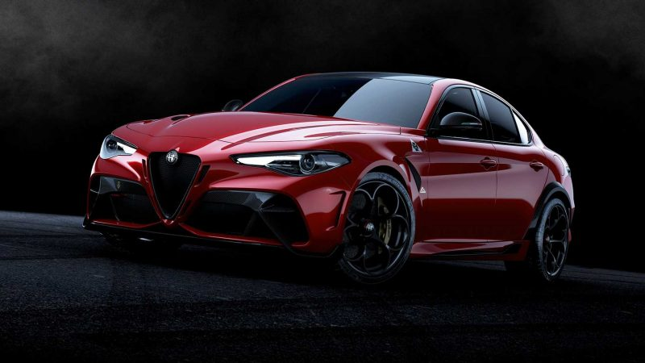

ALFAA
Hi welcome in Alfa Romeo vehicles
Alfa Romeo giulia
8-SPEED AUTOMATIC TRANSMISSION
The eight-speed automatic transmission in the 2022 Stelvio Quadrifoglio delivers first-rate performance,
power and efficiency. Using its integrated adaptive shift technology, the transmission adjusts to every driving situation to optimize efficiency based on a series of factors: driver behavior, temperature, grade and stability control.

twin-turbocharged 2.9L V6 in the Quadrifoglio achieves 0-100 km/h in less than four seconds. All Giulia sedans are equipped with standard leather seating, Apple CarPlay, Android Auto, SiriusXM radio, keyless passive entry, remote start, bi-xenon headlamps with LED daytime running lights and LED taillights, Alfa DNA Drive Mode selector, backup camera with rear park sensors, and full-speed forward collision warning-plus.
specs
| engine type | gas |
| Engine Capacity (liters) | 1598 |
| Transmission type | Automatic |
| horse power | 163 HP |
| torque | 240 NM |
| top speed | 220 KM/h |
| drive type | Front Wheel Drive |
| Fuel Tank Capacity | 72 |
| starting price | 32000 $ |
Alfa Romeo stelvio
A premium mid-size SUV for driving enthusiasts, the Stelvio was introduced by Alfa Romeo in 2018. The bulk of the line-up is powered by a direct-injection, 280-hp turbocharged and intercooled 2.0-litre four-cylinder engine bolted to an eight-speed automatic transmission. The topline Quadrifoglio showcases the company’s performance expertise with a 505-hp 2.9Ltwin-turbocharged V6 that was designed by Ferrari — at the time of its introduction the Stelvio held the Nürburgring record for the fastestproduction SUV with a lap time of seven minutes and 51.7 seconds. The 2020 model boast new standard content, an enhanced interior, advanced safety features and a new 8.8-inch touchscreen display.
| specs | torque | price |
|---|---|---|
| 280-hp turbocharged and intercooled 2.0-litre four-cylinder engine bolted to an eight-speed automatic transmission | 290 nm | 2,000,000 L.E |